1 算法基础
1. 时间复杂度
1.1常见的时间复杂度（按效率排序）
- O(1)<O(logn)<O(n)<O(nlogn)<O()<O(logn)<O()
1.2不常见的时间复杂度
- O(n!) O() O()
1.3 一眼能判断的时间复杂度
循环减半过程 O(logn)
例子：O(logn)
xwhile n > 1:print(n)n = n //2几次循环就是n的几次方的复杂度
例子：O（)
xxxxxxxxxxfor i in range(n):for j in range(n):print("XXX")
2. 空间复杂度
例如开辟了一块n*n的空间， 则S（n) = O()
3. 复习：递归
3.1 递归的两个特点：
- 调用自身
- 结束条件
例子：
xxxxxxxxxx```x = 3def func3(x): if x > 0: print(x) func3(x-1) # 3 2 1def func4(x): if x > 0: func4(x-1) print(x) # 1 2 3```对例子的解释：
func3： （红色部分为print（x）， 最外边的框是第一次）

func4： （红色部分为print（x）， 最外边的框是第一次，最里面的大红色框应该为黑色）

3.2 斐波那契数列
斐波那契数列 例如： 1 1 2 3 5 8.....
3.2.1递归表达式
xxxxxxxxxxdef fibnacci(n): if n == 0 or n == 1: return 1 else: return fibnacci(n-1) + fibnacci(n-2)print(fibnacci(4)) # 5递归粗略时间
时间装饰器:
cal_time.py
xxxxxxxxxximport timedef cal_time(func): def wrapper(*args, **kwargs): t1 = time.time() result = func(*args, **kwargs) t2 = time.time() print("%s runing time: %s secs." % (func.__name__, t2-t1)) return result return wrapper recursion.py
xxxxxxxxxxfrom cal_time import *def fibnacci(n): if n == 0 or n == 1: return 1 else: return fibnacci(n-1) + fibnacci(n-2)def fib(n): return fibnacci(n)print(fib(34)) # fib running time: 2.619 secs 递归算法的时间复杂度O（)


从上面两张图可知， n增加1，所需计算量翻倍，所以时间复杂度是O（)
3.2.2 非递归
普通
xxxxxxxxxxdef fib2(n): li = [1, 1] for i in range(2, n+1): li.append(li[-1]+li[-2]) return li[n]print(fib2(100)) 时间复杂度O（n），空间复杂度O（n）
优化
我们不需要完整的li，空间有浪费，我们可优化空间复杂度，代码：
xxxxxxxxxxdef fib3(n): a = 1 b = 1 c = 0 for i in range(2, n + 1): c = a + b a = b b = c return cprint(fib3(100)) 时间复杂度O（n），空间复杂度O（1）
3.2.3 通项表达式
, n = 1, 2, 3...
时间复杂度O（1），空间复杂度O（1）
用Python代码运算时， 因为根号不精确， 当 n >= 70 之后， 误差会明显
3.3 递归：面试题
一段有n个台阶组成的楼梯，小明从楼梯的最底层向最高处前进， 它可以选择一次迈一级台阶或者一次迈两级台阶。问： 他有多少种不同的走法？
F（n）=F（n-1）+F（n-2）
F(1) = 1, F(2) = 1 , F(3) = 2 ...
2 查找+排序lowB三人组
1. 递归实例： 汉诺塔问题
n个盘子时：
- 把n-1个圆盘从A经过C移动到B
- 把第n个圆盘从A移动到C
- 把n-1个小圆盘从B经过A移动到C
xxxxxxxxxxdef hanoi(n, A, B, C): # A=from_pole B=through_pole C=to_pole if n > 0: hanoi(n-1, A, C, B) print("%s->%s" % (A, C)) hanoi(n-1,B, A, C) hanoi(4, "A", "B", "C") 不太懂的小伙伴可以查看知乎：
2. 列表查找
2.1列表查找：从列表中查找指定元素
- 输入： 列表， 待查元素
- 输出： 元素下标或未查找到元素
2.1.1 顺序查找
从列表第一个元素开始，顺序进行搜索，直到找到为止。
- 若n是列表长度，顺序查找的时间复杂度为O(n)
2.1.2 二分查找
从有序 列表的候选区data[0:n]开始，通过对待查找的值与候选区中间值的比较，可以使候选区减少一半。
- 时间复杂度O(logn )
xxxxxxxxxxli = [1, 2, 5, 67, 2, 6, 7] def bin_search(li, val): low = 0 high = len(li)-1 while low <= high: mid = (low+high) // 2 if li[mid] == val: return mid elif li[mid] < val: low = mid + 1 else: high = mid - 1 return -1递归版本的二分查找
xxxxxxxxxxdef bin_search_rec(data_set, value,low, high): if low <= high: mid = (low+high) // 2 if data_set[mid] == value: return mid elif data_set[mid] > value: return bin_search_rec(data_set, value, low, mid-1) else: return bin_search_rec(data_set, value, mid+1, high) else: return 尾递归：（递归在return的地方），因为不用管递归后跳出去的事，有些例如Java，C++会优化成循环，速度会快。但是Python没有优化递归，速度比循环慢。
为什么不先排序再查找
因为最快的排序是O(nlogn) + 二分查找O(logn)。 顺序查找为O(n)。 所以直接用顺序查找。
3. 列表排序
列表排序
- 将无序列表变为有序列表
应用场景：
- 各种榜单
- 各种表格
- 给二分查找用
- 给其他算法用
输入：无序列表
输出：有序列表
升序与降序
列表排序的稳定性：
例子：（2，A） （3，B） （1，C） （2，D）
排序完之后为（1，C） （2，A）（2，D） （3，B）。（2，A）（2，D）的先后位置排序前后不变。
总结：相邻两个交换的是稳定的，非相邻两个交换的不稳定。
排序low B三人组：
- 冒泡排序
- 选择排序
- 插入排序
排序NB三人组：
- 快速排序
- 堆排序（难点）
- 归并排序
没什么人用的排序：
- 基数排序
- 希尔排序
- 桶排序
3.1 冒泡排序
思路：首先，列表每两个相邻的数，如果前边的比后边的大，那么交换这两个数
cal_time.py在1.1章中
xxxxxxxxxximport random from cal_time import*def bubble_sort(li): for i in range(len(li)-1):# i表示第n趟 一共n或者n-1趟 for j in range(len(li) - i - 1):#第i趟 无序区[0，n-i-1] j表示箭头 0~n-i-1 if li[j] > li[j+1]: li[j], li[j+1] = li[j+1], li[j] li = list(range(10000))random.shuffle(li)bubble_sort(li)代码关键点：
- 趟数 (n-i)
- 无序区 (n-i-1)
冒泡排序-优化
- 如果冒泡排序中执行一趟而没有交换，则列表已经是有序状态，可以直接结束算法。
xxxxxxxxxximport random from cal_time import*def bubble_sort(li): for i in range(len(li)-1): exchange = False for j in range(len(li) - i - 1): if li[j] > li[j+1]: li[j], li[j+1] = li[j+1], li[j] exchange = True if not exchange: break li = list(range(10000))random.shuffle(li)bubble_sort(li)最好情况O(n)
平均情况O(n^2)
最坏情况O(n^2)
稳定
3.2 选择排序
思路：
- 一趟遍历记录最小的数，放到第一个位置；
- 再一趟遍历记录剩余列表中最小的数，继续放置；
xxxxxxxxxximport random from cal_time import*def get_min_pos(li): min_pos = 0 for i in range(1,len(li)): if li[i] < li[min_pos]: min_pos = i return min_posdef select_sort(li): for i in range(len(li)-1): # n或者n-1趟 # 第i趟无序区范围i~最后 min_pos = i # min——pos更新为无序区最小值位置 for j in range(i+1,len(li)): if li[j] < li[min_pos]: min_pos = j li[i], li[min_pos] = li[min_pos], li[i] li = list(range(10000))random.shuffle(li)select_sort(li)最好情况O(n^2)
平均情况O(n^2)
最坏情况O(n^2)
选择排序不稳定
例子： 2A 2B 1 3， 排序完 1 2B 2A 3
3.3 插入排序
思路：
- 列表被分为有序区和无序区两个部分。最初有序区只有一个元素。
- 每次无序区选择一个元素，插入到有序区的位置，直到无序区变空。
代码关键点：
- 摸到的手牌（无序区选择的一个元素）
- 手里的牌（有序区）
xxxxxxxxxximport randomfrom cal_time import *def insert_sort(li): for i in range(1, len(li)):# i 表示摸到的牌的下表 tmp = li[i] #摸到的牌 j = i - 1 while j >= 0 and li[j] > tmp:# 只要往后挪就循环2个条件都得满足 # 如果 j=-1 停止挪 如果li[j]小了 停止挪 li[j+1] = li[j] j -= 1 # j位置在循环结束的时候要么是-1要么是一个比tmp小的值 li[j+1] = tmp li = list(range(10000)) random.shuffle(li)insert_sort(li) 最好情况O(n)
平均情况O(n^2)
最坏情况O(n^2)
3 快速排序
快速排序：快
思路：
- 取一个元素p（第一个元素），使元素p归位；
- 列表被p分成两部分，左边都比p小，右边都比p大；
- 递归完成排序。
xxxxxxxxxxdef quick_sort(li, left, right): if left < right:#待排序的区域至少有两个元素 mid = partition(li,left,right) quick_sort(li,left,mid-1) quick_sort(li,mid+1,right) def partition(li,left,right): tmp = li[left] while left < right: while left < right and li[right] >= tmp: right -= 1 li[left] = li[right] while left < right and li[left] <= tmp: left += 1 li[right] = li[left] li[left] = tmp return left 3.3.1 时间复杂度（不严谨推理）

假设我们有64个数要排序，总共需要log(n)次，每次需要n，所以最好时间复杂度为O(nlogn).
如果是倒序排列，每次只能递归一侧，则最坏时间复杂度为O(n^2)。
总结：
最好情况O(nlogn)
平均情况O(nlogn)
最坏情况O(n^2)
3.3.2 优化（改善倒序情况）
xxxxxxxxxxdef quick_sort(li, left, right): if left < right: mid = random_partition(li,left,right) quick_sort(li,left,mid-1) quick_sort(li,mid+1,right) def partition(li,left,right): tmp = li[left] while left < right: while left < right and li[right] >= tmp: right -= 1 li[left] = li[right] while left < right and li[left] <= tmp: left += 1 li[right] = li[left] li[left] = tmp return left def random_partition(li,left,right): i = random.randint(left,right) li[i], li[left] =li[left],li[i] return partition(li,left,right)增加了随机性，取得第一个数与剩下的数随机交换位置，使得第一个数有随机性，不再是倒序。其实是将可能倒序的情况时候需要消耗的更多时间，平均到各种情况的可能性里面去了。
最坏时间复杂度不变：O(n^2)。
3.3.3 另一种版本代码
- 方便理解但是占用空间
xxxxxxxxxxdef quick_sort2(li): if len(li) < 2: return li tmp = li[0] left = [v for v in li[1:] if v <= tmp] right = [v for v in li[1:] if v > tmp] left = quick_sort2(left) right = quick_sort2(right) return left + [tmp] + right4 堆排序
1. 树的介绍（铺垫知识）
树是一种数据结构 比如：目录结构
树是一种可以递归定义的数据结构
树是由n个节点组成的集合：
- 如果n=0, 那这是一棵空树；
- 如果n>0, 那存在一个节点作为树的根节点，其他节点可以分为m个集合，每个集合本身又是一棵树。
一些概念
- 根节点（A），叶子节点 （BCHIPQKLMN）
- 树的深度（高度）4 （A-E-J-P）
- 树的度6 （A有BCDEFG，最广的）
- 孩子节点/父节点 （B相对于A）
- 子树（比如以D为根的树）

1.1 特殊且常用的树-- 二叉树
- 二叉树：度不超过2的树（节点最多有两个叉）
两种特殊的二叉树
- 满二叉树：一个二叉树，如果每一个层的节点数都达到最大值，则这个二叉树就是满二叉树。

- 完全二叉树：叶节点只能出现在最下层和次下层，并且最下面一层的节点都集中在该层最左边的若干位置的二叉树。

1.2 二叉树的存储方式
链式存储方式
顺序存储方式（列表）
完全二叉树写成列表形式后，父节点位置与孩子节点位置的关系表达式
- 父节点位置是i，左孩子位置是2i+1
- 父节点位置是i，右孩子位置是2i+2
- 左孩子位置或者右孩子位置是i，父节点位置是（i-1）//2

2. 堆排序
2.1 堆（特殊的完全二叉树）
- 大根堆/大顶堆：一棵完全二叉树，满足任一节点都比其孩子节点大
- 小根堆/小顶堆：一棵完全二叉树，满足任一节点都比其孩子节点小

2.2 堆的向下调整性质
- 假设：节点的左右子树都是堆，但自身不是堆
- 当根节点的左右子树都是堆时，可以通过一次向下的调整来将其变换成一个堆。
- 具体过程，因为2比（9，7）这一层小，所以取下来放一边。用9代替2的位置。2尝试放入最开始9的位置，但是2比（8，5）小，8放在最开始9的位置，以此类推。。。
变换前：

变换后：

2.3 挨个出数
如上图，是一个完整的堆，9先出数，然后找最后一层的最后一个代理9的位置，进行堆的向下调整，调整完后出最顶上的数。以此类推。。。出完所有数。
2.4 构造堆
最开始的树

步骤：


2.5 堆排序总结
先运用堆的向下调整构造堆，再运用堆的向下调整挨个出数。
代码中sift（）是堆的向下调整函数，其时间复杂度为为logn，heap_sort()函数的构造堆和挨个出数的时间复杂都为nlogn，所以堆排序的时间复杂度为O(nlogn)
不稳定
最好时间复杂度：O(nlogn)
平均时间复杂度：O(nlogn)
最坏时间复杂度：O(nlogn)
2.6 代码
xxxxxxxxxximport randomfrom cal_time import *def sift(li, low, high):#这是堆的向下调整函数 # li表示树，low表示树根，high表示树最后一个节点的位置 tem = li[low] i = low j = 2*i +1 #初始j指向空位的左孩子 # i指向空位，j指向两个孩子 while j <= high:#循环推退出的第二种情况：j>high,说明空位i是叶子节点 if j+1 <= high and li[j] < li[j+1]:#如果右孩子存在并且比左孩子大，指向右孩子 j += 1 if li[j] > tmp: li[i] = li[j] i = j j = 2*i+1 else:# 循环退出的第一种情况：j位置的值比tmp小，说明两个孩子都比tmp小 break li[i] = tmp def heap_sort(li): n = len(li) # 1. 构造堆 for low in range(n//2-1, -1, -1): sift(li,low,n-1) # 2. 挨个出数 for high in range(n-1,-1,-1): li[0], li[high] = li[high], li[0] #退休 棋子 sift(li, 0,high-1) li = list(range(100))random.shuffle(li)print(li)heap_sort(li)print(li) 2.7 Python内置堆模块
xxxxxxxxxximport heapqli = [9,5,7,8,2,6,4,1,3]heapq.heapify(li)print(li)heapq.heappush(li,0)print(li)item = heap.heappop(li)print(item)print(li)- 利用heapq内置模块实现堆排序
xxxxxxxxxxdef heapsort(li): h = [] for value in li:#将h构造成堆的列表形式 heappush(h, value) return [heappop(h) for i in range(len(h))] 3. 堆排序扩展 -- topK问题
- 现有n个数，设计算法找出前K大的数(k<n).
- 解决方法：（下个笔记）
5 归并排序
排序后切片 时间复杂度：O（nlogn+k）
堆排序O（nlogn）+列表切片O（k）
LowB三人组思想
冒泡：O(kn) 外循环k内循环n
选择： O(kn) 外循环k内循环n
插入： O(kn) 外循环n内循环k
堆的应用 O(nlogk)
- 取列表前k个元素建立一个小根堆O(klogk)。堆顶就是目前第K大的数
- 依次向后遍历原列表，对于列表中的元素，如果小于堆顶，则忽略该元素；如果大于堆顶，则将堆顶更换为该元素，并且对堆进行一次调整。(n-k)logk
- 遍历列表所有元素后，倒序弹出堆顶。k(logk)
xxxxxxxxxximport heapqli = [9,5,7,8,2,6,4,1,3]print(heapq.nlargest(5,li))print(heapq.nsmallest(5,li))1. 归并排序的含义
假设现在的列表分为两段有序，如何将其合成为一个有序列表
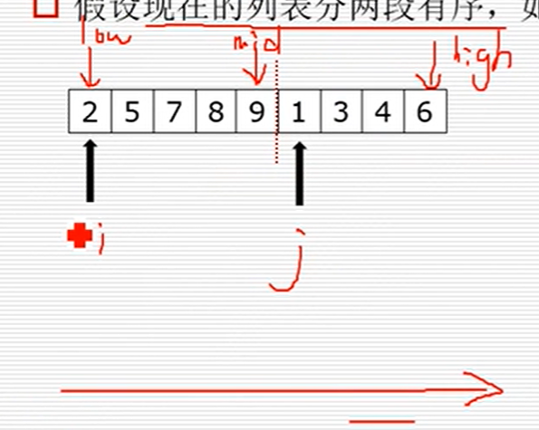


xxxxxxxxxxdef merge(li, low, mid, high):#一次归并 # 列表两段有序： [low, mid] [mid+1, high] i = low # i指向第一段最小值位置 j = mid + 1 #j 指向第二段最小值位置 li_tmp = [] #开个临时列表存比较后的按顺序的值 while i <= mid and j <= high: # i,j两个指针分别向后走，直到一个走完 if li[i] <= li[j]: li_tmp.append(li[i]) i += 1 else: li_tmp.append(li[j]) j += 1 #另一个没走完的继续走，因为我们不确定是哪个，所以写两个while while i <= mid: li_tmp.append(li[i]) i += 1 while j<= high: li_tmp.append(li[j]) j += 1 # li_tmp[0:high-low+1] 写回去 li[low:high+1] for i in range(low, high+1): li[i] = li_tmp[i-low]li = [2,5,7,8,9,1,3,4,6]merge(li, 0, 4, 8)print(li)def merge2list(li1, li2): #上边给的是一个list，分为两个顺序的部分。现在给两个顺序的list，输出一个总顺序的list li = [] i = 0 j = 0 while i < len(li1) and j < len(li2): if li1[i] <= li2[j]: li.append(li1[i]) i += 1 else: li.append(li2[j]) j += 1 while i < len(li1): li.append(li1[i]) i += 1 while j < len(li2): li.append(li2[i]) j +=1 return lili1 = [2,5,7,8,9]li2 = [1,3,4,6]li = merge2list(li1,li2)print(li)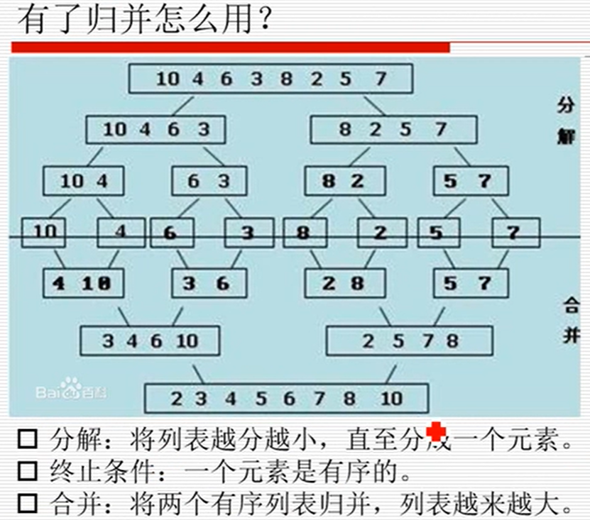
xxxxxxxxxx def merge_sort(li, low, high):#排序li的low到high的范围 if low < high: mid = (low+high) //2 merge_sort(li, low, mid) merge_sort(li, mid+1, high) merge(li,low,mid,high)2. 归并排序时间复杂度
时间复杂度： O(nlogn)
一次归并的时间复杂度O(n),总共分解次数logn，合并次数logn，总共O(nlogn+nlogn)
空间复杂度 O(n)，因为开了最大存n的列表
NB三人组—小结
三种排序算法的时间复杂度都是O(nlogn)
一般情况下，就运算时间而言：
- 快速排序 < 归并排序 < 堆排序
三种排序算法的缺点：
- 快速排序：极端情况下排序效率低
- 归并排序：需要额外的内存开销
- 堆排序： 在快的排序算法中相对较慢
所有排序的总结
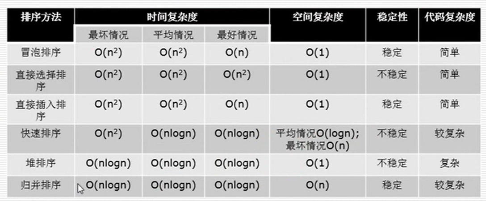
6 希尔排序+计数排序+桶排序
1. 希尔排序（Shell）

第一步
先分成上下四行

每行插入排序

复原

第二步
先分成上下两行

每行进行插入排序
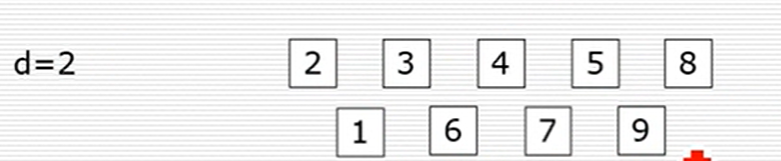
复原

第三步
分成上下一行（就等于不分）
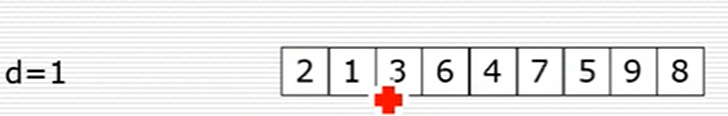
每行插入排序
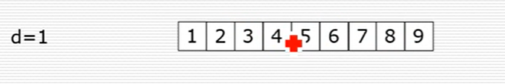
结束
代码实现
xxxxxxxxxxdef insert_sort_gap(li,d): for i in range(d, len(li)): # i表示摸到的牌的下标 tmp = li[i] #摸到的牌 j = i -d while j >=0 and li[j] > tmp #2个条件满足时手里牌往后挪 #如果j=-1 停止挪 如果li[j]小了停止挪 li[j+d] = li[j] j -= d # j位置在循环结束时要么是-1要么是一个比tmp小的值 li[j+d] = tmp def shell_sort(li): d = len(li) //2 while d >0: insert_sort_gap(li,d) d = d//2时间复杂度
时间复杂度比较复杂，并且和选取的GAP序列有关。具体见WIKI
2. 计数排序(count)
现在有一个列表，已知列表中的数范围都在0到100之间。设计算法在O（n）时间复杂度内将列表进行排序。
例子
待排序的数组 1 0 4 2 1 3 4 1 2 4 1 3 0 1
每个数出现的次数 2 5 2 2 3
结果： 0 0 1 1 1 1 1 2 2 3 3 4 4 4
xxxxxxxxxxdef count_sort(li, max_num=100): count = [0 for i in range(max_num+1)] for val in li: count[val] += 1 li.clear() for i,v in enumerate(count):# 表示i这个数出现了v次 for i in range(v): li.append(i) 3. 桶排序
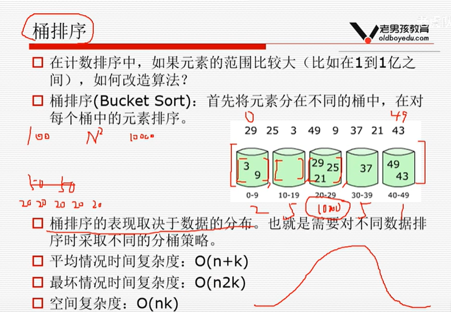
最坏时间复杂度是O（n^2k)
7 基数排序(radix)


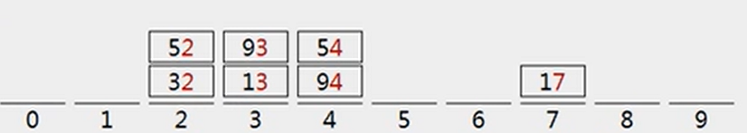


我的理解：例如有多关键词排序先数字后字母：（1，a），（3，b），（2，b），（2，a）。
- 先把他们分成（1，a） （2，b），（2，a） （ 3，b）三组。
- 然后对每组组内排序，得（1，a）（2，a）（2，b）（ 3，b）。
这个等价于
- 以字母为关键字排序（1，a）（2，a）（ 3，b）（2，b）
- 排好后，以数字为关键字使用稳定排序（排序的数字相同时，在前面的依然在前面），得（1，a）（2，a）（2，b）（ 3，b）。
也就是说，我们可以用平时思考的排序逻辑，转化成方便写成程序的逻辑，这两种逻辑是等价的
1. 课外的代码(无关基数排序)
xxxxxxxxxxdef get_digit(num, i):#例如给你123，分别取1，2，3 #i=0 各位 1十位 2百位... return num // (10**i)%10def reverse_list(li): n = len(li) for i in range(n // 2): li[i], li[n-i-1] = li[n-i-1],li[i]def int2list(num): li = [] while num>0: li.append(num%10) num = num//10 li.reverse() return lidef reverse_int(num):#-1230 >-321 is_neg = False if num < 0: is_neg = True num = -1 * num res = 0 while num > 0: res = res * 10 res += num % 10 num = num // 10 if is_neg: res = res* -1 return res2. 代码实现
xxxxxxxxxxdef radix_sort(li): max_num = max(li)#找到最大位数的数字，因为123最大，就需要补充12为，012 i = 0 while(10**i <= max_num): buckets = [[] for i in range(10)] for val in li:#装进桶里 digit = val // (10** i) % 10 buckets[digit].append(val) li.clear() for bucket in buckets:#从桶里排回去 for val in bucket: li.append(val) i += 13. 时间复杂度

数据结构
8 顺序表
1. 什么是数据结构
2. 数据结构的分类
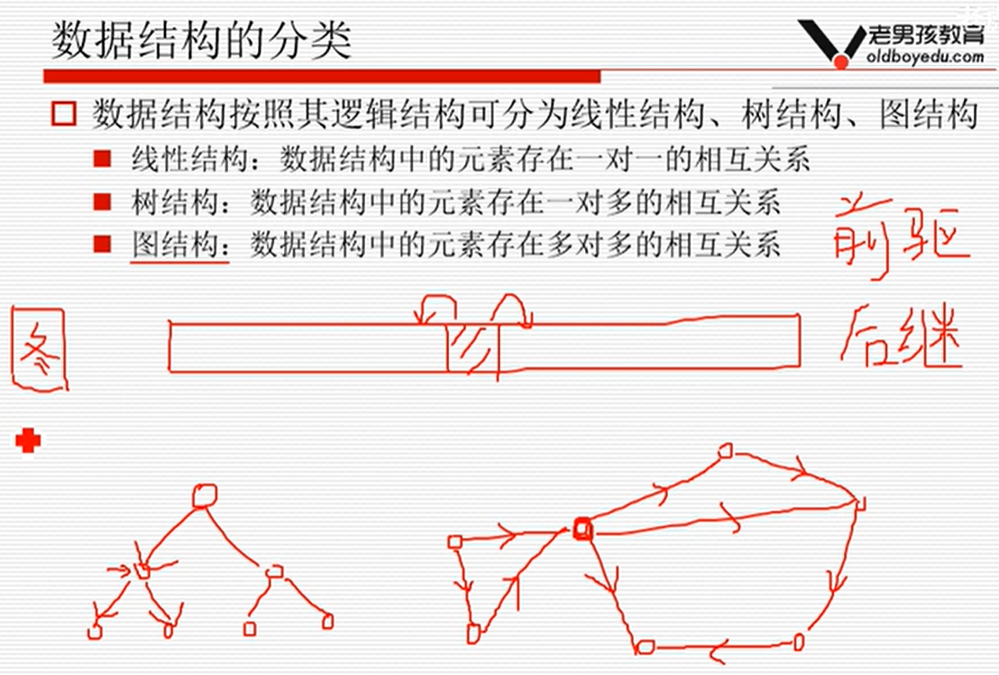
1. 列表
1.0 列表的定义

1.1 32位的实质
内存空间，最多有2^32个空间，每个空间1字节（Byte）,所以相当于最大4G内存。
32位机器中，每个地址占4个字节。
64位机器中，每个地址占8个字节。
数组的下标运算的实质

一个int类型的数占有四个字节。那么int a[5], 产生一个拥有5个int类型的数组，相当于程序向操作系统，操作系统再向内存，要了一块300-319的地址的内存。
1.2 数组与列表的区别
- 数组创建时必须规定数组长度，列表不用
- 数组内的东西必须一种类型，列表不用
1.3 列表可以扩展长度的实质

比如刚开始生成了一个列表可以装4个元素。当装满的时候，新生成一个翻倍容量的空列表，把前面4个元素复制过去。append操作的时间复杂度为O（3）。
1.4 Python 列表可以存不同类型的实质
列表里其实保存的是地址，在32位机器里地址占4个字节，地址再指向不同类型的元素。
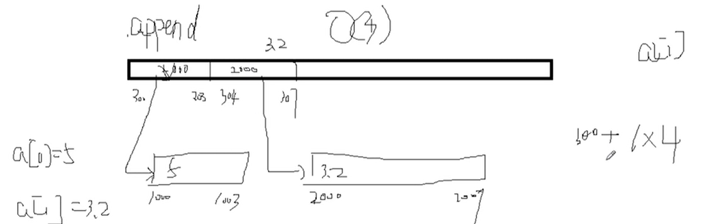
9 堆栈（stack）队列
栈
堆栈是早年的叫法，其实就是指栈。
1. 栈的定义

2. Python栈的实现
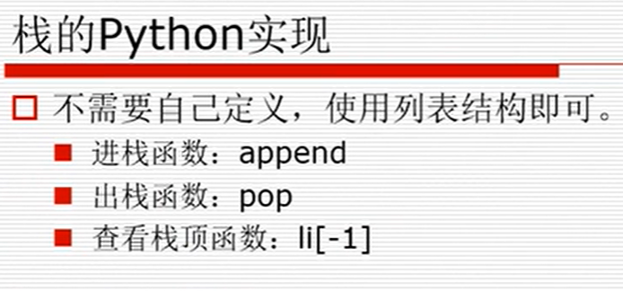
3. 栈相关的面试题

xxxxxxxxxxdef brace_match(s): stack = [] d = {'(':')','[':']','{':'}'} for ch in s: if ch in {'(','[','{'}: stack.append(ch) elif len(stack) == 0: print('多了右括号%s'%ch) return False elif d[stack[-1]] == ch: stack.pop() else: print('括号%s处不匹配' % ch) return False if len(stack) == 0: return True else: print("剩余左括号未匹配") return False队列
1. 队列的定义

2. 队列的实现
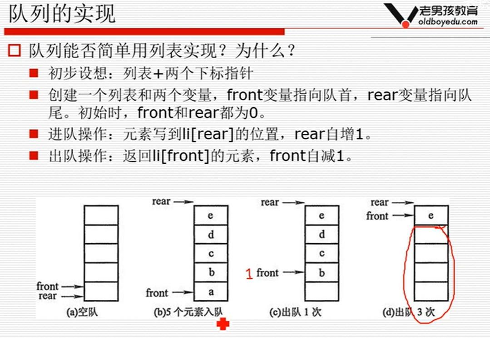

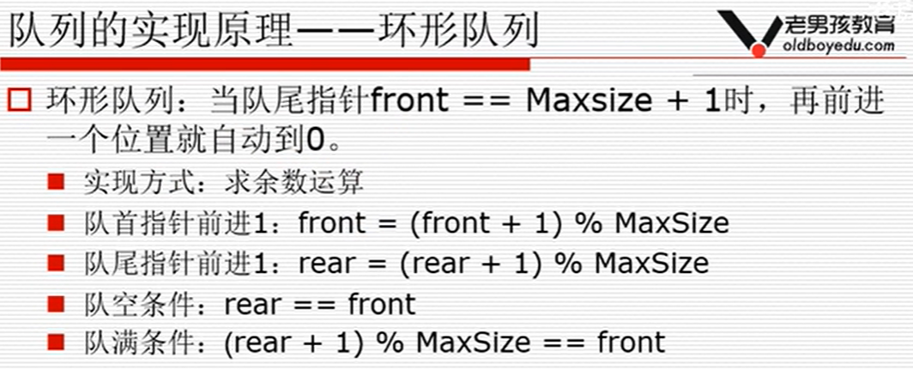
2.2 用两个栈实现队列
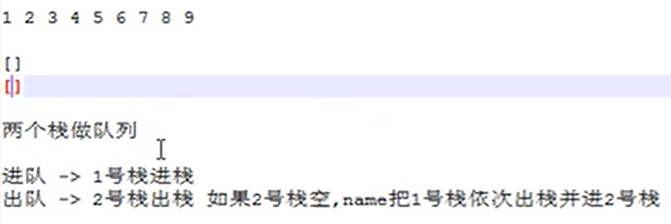
xxxxxxxxxxfrom collections import dequeq = deque() #双向队列q.append(1) q.append(2)q.append(3)print(q.popleft())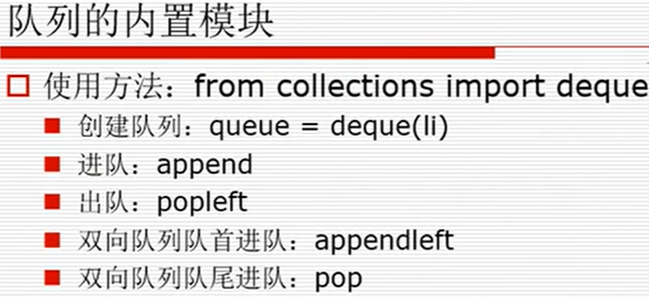
10 迷宫问题

1. 方法一：深度优先搜索（DFS Depth First Search）
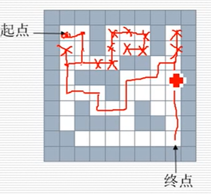
根据“上右下左”顺序一直走，每一步都放在一个栈里，当“上右下左”都不能走时出栈，直到有个还能继续走的格子，继续执行“上右下左”。若最后全部出栈，即起点也出栈了，则无路可走。
xxxxxxxxxxmaze = [ #在这个迷宫里，从上到下是x，从左到右是y[1,1,1,1,1,1,1,1,1,1],[1,0,0,1,0,0,0,1,0,1],[1,0,0,1,0,0,0,1,0,1],[1,0,0,0,0,1,1,0,0,1],[1,0,1,1,1,0,0,0,0,1],[1,0,0,0,1,0,0,0,0,1],[1,0,1,0,0,0,1,0,0,1],[1,0,1,1,1,0,1,1,0,1],[1,1,0,0,0,0,0,0,0,1],[1,1,1,1,1,1,1,1,1,1]]dirs = [ lambda x,y: (x-1, y), #上 lambda x,y: (x, y+1), #右 lambda x,y: (x+1, y), #下 lambda x,y: (x, y-1) #左]def slove_maze_stack(x1,y1,x2,y2): stack = [] stack.append((x1,y1)) while len(stack) >0: # 当栈不空时循环 cur_node = stack[-1] # 当前所在节点 if cur_node == (x2, y2): # 如果到终点了 print(stack) return True for d in dirs: next_node = d(*cur_node) if maze[next_node[0]][next_node[1]] == 0: stack.append(next_node) # 把node放在栈里就是走 maze[next_node[0]][next_node[1]] == 2 #把走过的路用2区别出来 break #能走就不看其他方向了 else：# 当四个方向都走不通，把cur_node出栈 stack.pop() else: print("无路") return False 2. 方法二： 广度优先搜索（BFS Breadth first search）
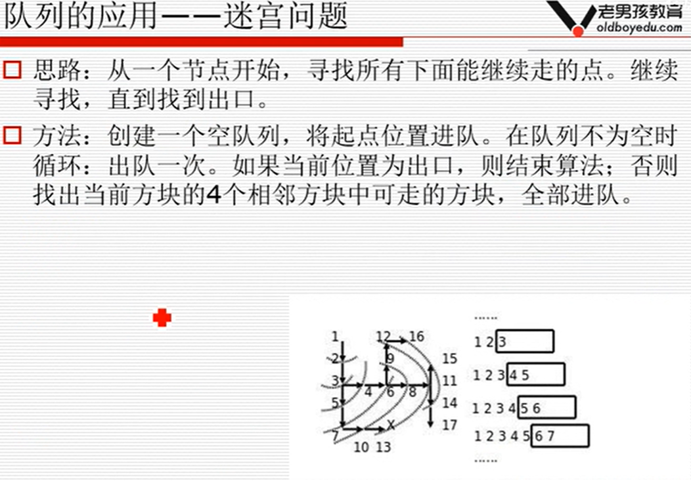
具体执行过程如下图，起点（1，1）先进队列（队列右进左出），然后有两条路可以走，那么（1，1）出队，（1，2）和（2，1）根据“右下左上”进队。然后循环这步骤。
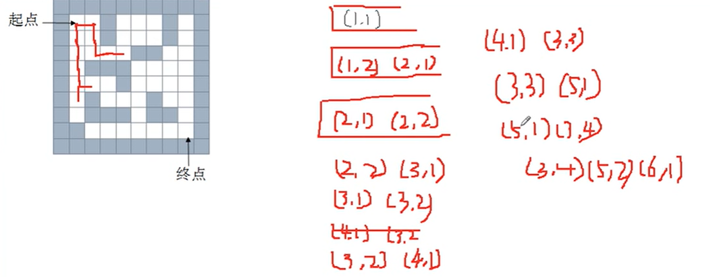
那么如何找到那条出去的路径呢？
我们在（1，1）后面加上是谁带这个节点进来的，然后在出队列时，用一个列表储存出队列的元素。如下图


xxxxxxxxxxfrom collections import dequemaze = [ #在这个迷宫里，从上到下是x，从左到右是y[1,1,1,1,1,1,1,1,1,1],[1,0,0,1,0,0,0,1,0,1],[1,0,0,1,0,0,0,1,0,1],[1,0,0,0,0,1,1,0,0,1],[1,0,1,1,1,0,0,0,0,1],[1,0,0,0,1,0,0,0,0,1],[1,0,1,0,0,0,1,0,0,1],[1,0,1,1,1,0,1,1,0,1],[1,1,0,0,0,0,0,0,0,1],[1,1,1,1,1,1,1,1,1,1]]dirs = [ lambda x,y: (x-1, y), #上 lambda x,y: (x, y+1), #右 lambda x,y: (x+1, y), #下 lambda x,y: (x, y-1) #左]def solve_maze_queue(x1, y1, x2, y2): q = deque() q.append((x1, y1, -1))# 起点位置，-1在这里就是none，为了区别0 maze[x1][y1] = 2 # 走过的地方用2区别开 traceback = [] # 把出队的节点放在这个列表 while len(q) > 0: # 队不空时循环 cur_node = q.popleft() #当前节点出队 trackback.append(cur_node) # 出队的节点放在这个列表 if cur_node[:-1] == (x2,y2): # 检查是否到终点了，扔掉元组内最后一个值 path = [] i = len(traceback) - 1 while i >= 0: path.append(traceback[i][0:2]) i = traceback[i][2] path.reverse() print(path) #注释掉，之前是想看traceback列表内容 #for i,v in enumerate(traceback): # print(i,v) #return for d in dirs:# 各个方向的下个节点 next_x, next_y = d(cur_node[0], cur_node[1]) if maze[next_x][next_y] == 0: # 这里考虑各个方向的分叉路线，无需break q.append((next_x,next_y, len(traceback)-1)) maze[next_x][next_y] = 2 #标记已走过的路 else：# 队内元素都出去了，即路都走死了 print("无路") return False 广度优先搜索保证了最短路径之一
因为每个节点都是所有可以走的下个节点，出来的结果保证是最短路径其中之一。
11 链表
1.1 链表的定义
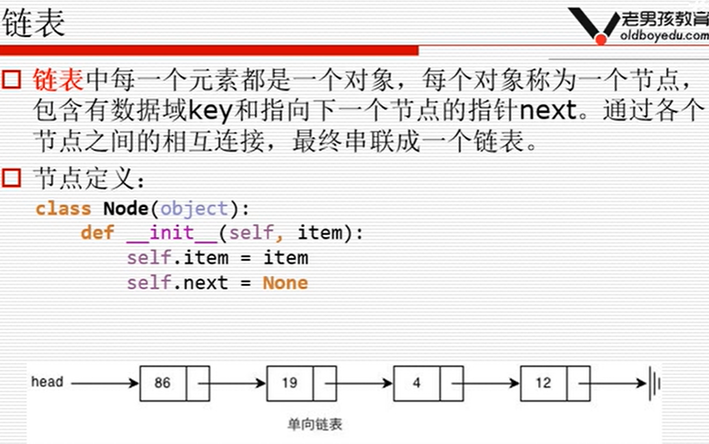
xxxxxxxxxxclass Node: def __init__(self,data): self.data = data self.next = None # 第一种写法，不推荐，因为无法表示空链表的情况a = Node(1)b = Node(2)c = Node(3)a.next = bb.next = chead = a# 第二种写法，推荐，原因如下# 我们必须要留一个空的头结点，来保证空链表的情况可以表示。头结点的位置，我们也可以保存链表长度的信息 # 带空头结点的链表head = Node() # 头结点a = Node(1) b = Node(2)c = Node(3)head.next = aa.next = bb.next = cprint(a.next.data)# a.next是下一个对象b，拿到b里面的data 1.2 建立链表（头插法）

切记！
插入元素先指向后结点，此处3先指向2，再让0指向3. 不然，先动0指向2的话，会让2永远找不到。
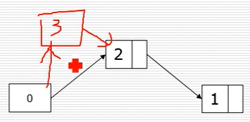
xxxxxxxxxxclass Node: def __init__(self, data=None): self.data = data self.next = None class LinkList: def __init__(self): self.head = None # 头插法 def create_linklist_head(self, li): # 传入列表转成链表 self.head = Node(0) for v in li: n = Node(v) # 建一个新的未串联的结点n，把其串到链表中 n.next = self.head.next #运用“切记！”里的3先串联2 self.head.next = n self.head.data += 1 #输出链表中所有元素 def traverse_linklist(self): p = self.head.next while p: print(p.data) p = p.next1.3 建立链表（尾插法）
步骤：


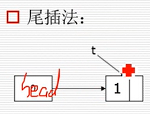
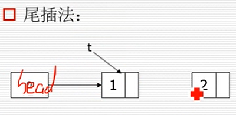
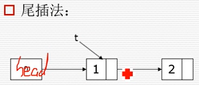
xxxxxxxxxxclass Node: def __init__(self, data=None): self.data = data self.next = None class LinkList: def __init__(self): self.head = None # 尾插法 def create_linklist_tail(self, li): self.head = Node(0) self.tail = self.head # 我们需要一个变量记录tail的位置 for v in li: # 对于列表中每个元素,运用上面步骤 p = Node(v) self.tail.next = p self.tail = p self.head.data += 1 #输出链表中所有元素 def traverse_linklist(self): p = self.head.next while p: print(p.data) p = p.next 1.4 链表节点的插入和删除
插入步骤
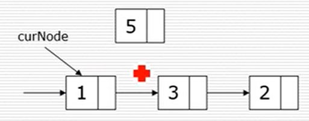
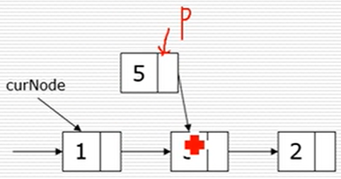
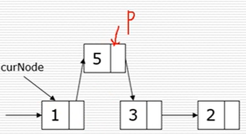

删除步骤
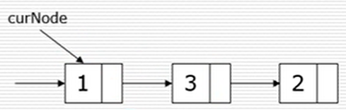

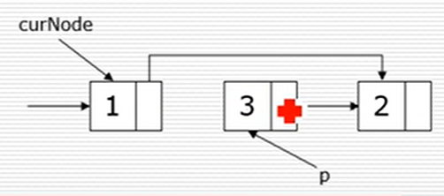


2.1 双链表的定义

2.2 双链表节点的插入和删除
插入步骤


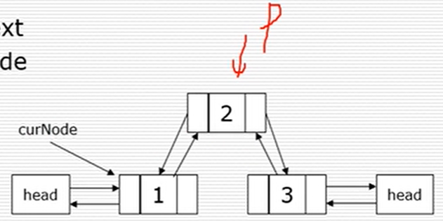

删除步骤
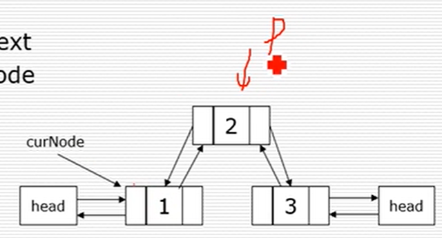
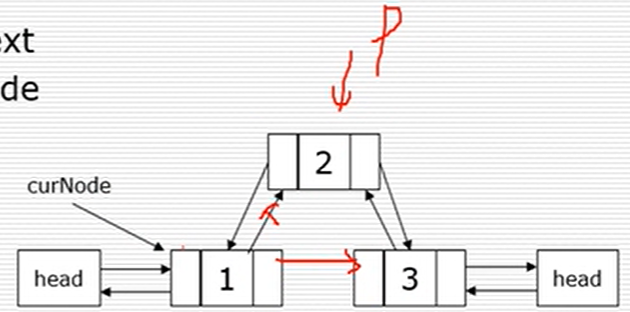
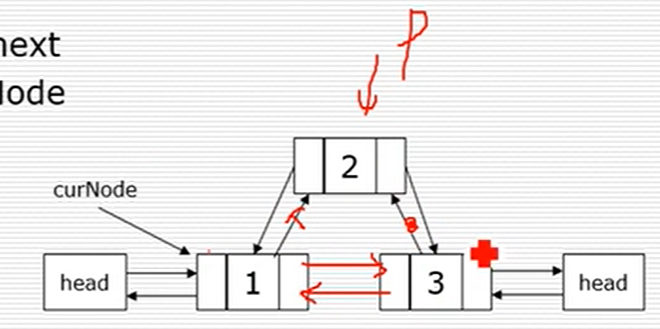

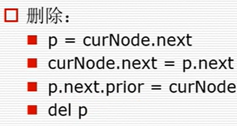
2.3 链表与列表 复杂度对比
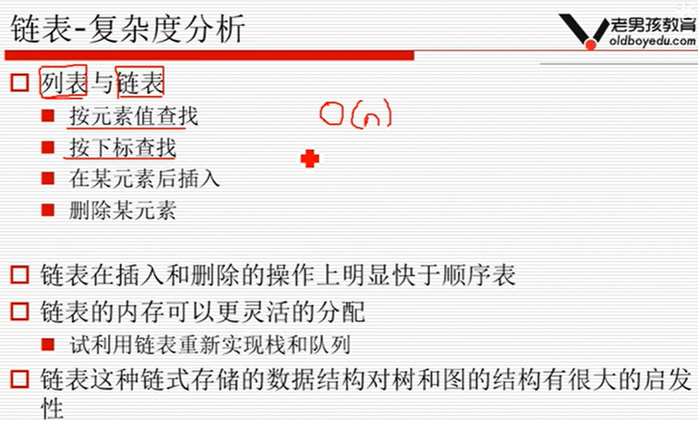
按元素值查找
列表O(logn)二分查找 链表O(n)
按下标查找
列表O(1) 链表O(n)
在某元素后插入
列表O(n) 链表O(1)
删除某元素
列表O(n) 链表O(1)
12 哈希表
1.1哈希表的定义

1.2 直接寻址表
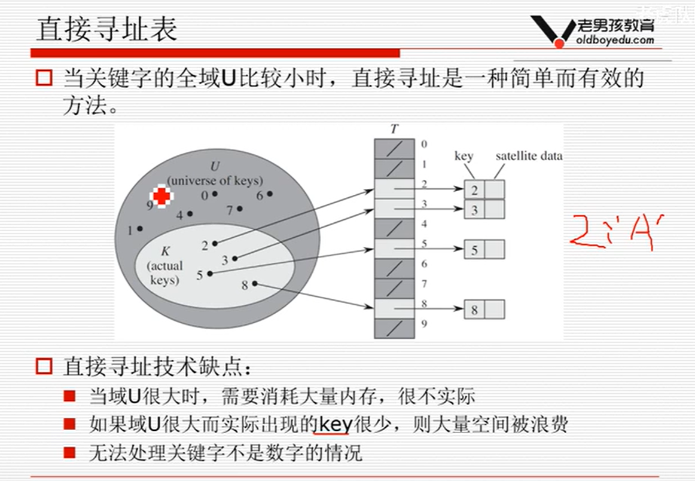
1.3 哈希表
因为直接寻址表的缺点，我们用哈希表
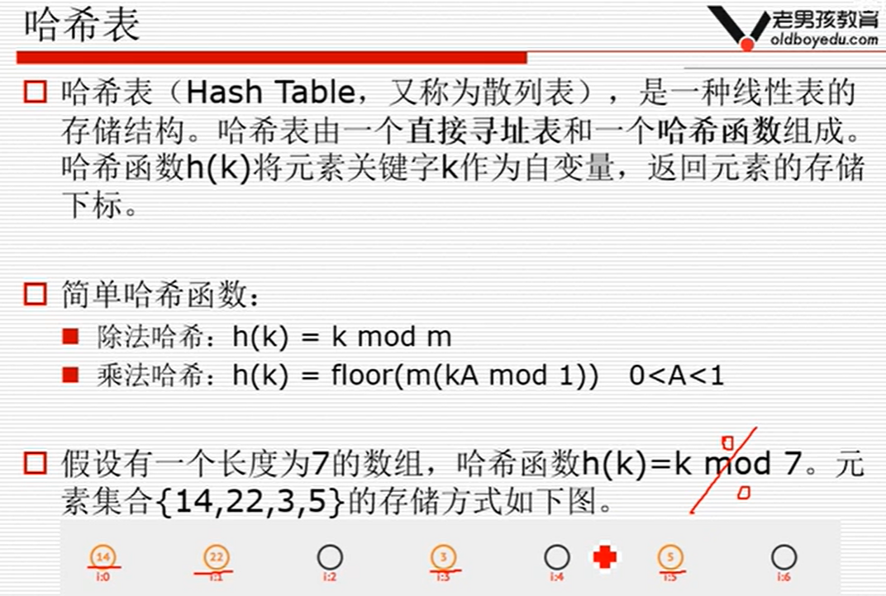
1.3.1 哈希冲突
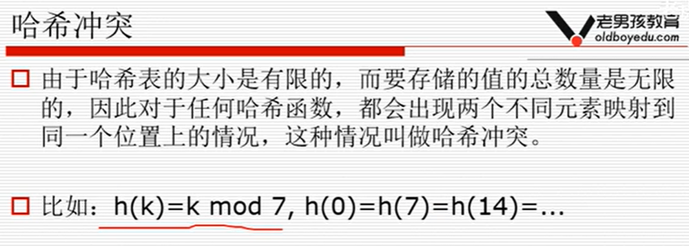
1.3.2 解决哈希冲突方法1--开放寻址法

1.3.3解决哈希冲突方法2--拉链法
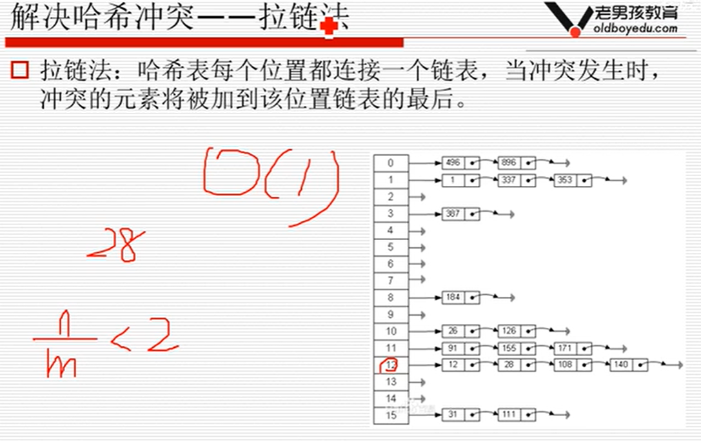
连接一个链表是因为，链表方便增加和删除，列表不方便。
1.4 哈希表在Python中运用

13 二叉树
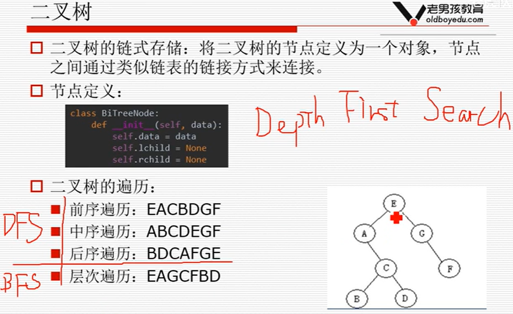
1. 二叉树的遍历
DFS（深度优先搜索）：
- 前序遍历
- 中序遍历
- 后序遍历
BFS（广度优先搜素）：
- 层次遍历
2. 遍历代码
xxxxxxxxxxfrom collections import dequeclass BiTreeNode: def __init__(self,data): self.data = data self.lchild = None self.rchild = None a = BiTreeNode("A")b = BiTreeNode("B")c = BiTreeNode("C")d = BiTreeNode("D")e = BiTreeNode("E")f = BiTreeNode("F")g = BiTreeNode("G")e.lchild = ae.rchild = ga.rchild = cc.lchild = bc.rchild = dg.rchild = froot = e#前序遍历#前序遍历相当于递归，递归相当于栈，后进先出，先左后右，进栈出栈。所以前序遍历顺序EACBDGFdef pre_order(root): if root: print(root.data,end="") pre_order(root.lchild) pre_order(root.rchild) pre_order(root)# 中序遍历# ABCDEGFdef in_order(root): if root: in_order(root.lchild) print(root.data,end="") in_order(root.rchild) # 后序遍历 # BDCAFGEdef post_order(root): if root: post_order(root.lchild) post_order(root.rchild) print(root.data,end="") #层次遍历#把每一层上的节点都按从上到下从左到右输出，运用队列。def level_order(root): q = deque() q.append(root) while(len(q)>0):#当队列不空时循环 x = q.popleft() #x是出队的节点 print(x.data, end="") if x.lchild:#出队节点如果有左孩子 q.append(x.lchild)#左孩子进队 if x.rchild:#出队节点如果有右孩子 q.append(x.rchild)#右孩子进队 3. 二叉树面试题
根据给出的一棵二叉树，写出各种遍历
写出二叉树各种遍历的代码
根据先序+中序遍历，画出原来的二叉树
我们只需要根据先序确定每次进栈的根节点，然后用中序分成左右。例如：先序EACBDGF，中序ABCDEGF。
- 先序确定根E，中序确定左子树ABCD，右子树GF。
- 进入E的左子树，先序确定根A，中序确定A的右子树BCD
- 先序确定C，C的左子树B，C的右子树D
- 然后进入E的右子树G，然后G的右子树F
根据后序+中序遍历，画出原来的二叉树
- 与先序+中序类似，但是后序的根是最后一个元素。
4. 多叉树情况
- 多叉树不再用左孩子（lchild）右孩子（rchild）来保存之后的节点，而是用一个list来保存。（我们将构造方法里self.lchild和self.rchild改写成self.children=[ ]
- 多叉树没有中序遍历，但是有先序和后序遍历，只需要在两个递归处写成for循环
- 多叉树有层次遍历
5. 二叉树的应用：二叉搜索树

- 二叉搜索树作用是实现字典，集合方式，另一种是哈希表
- 字典需要查询，插入，删除速度要快
- 查询速度O（logn），因为总共n个数，每次查询都分到左或者右子树，查一次减半。
- 插入速度也是O（logn）。原理跟查询相同
5.1 二叉搜索树的插入和查找操作代码
xxxxxxxxxx# 二叉搜索树# binary search treeclass BiTreeNode: def __init__(self,data): self.data = data self.lchild = None self.rchild = Noneclass BST: def __init__(self,li): self.root =None if li: for val in li: self.insert(val) #二叉搜索树的插入操作 def insert(self, key): #key是要插入的字典里的key，上面图里的值都指字典里的键 if not self.root: #如果root是空的话 self.root = BiTreeNode(key) #建一个Node else： p = self.root #p是一个指针，指向从根开始的键，如果root有值，我们拿p指向root while p: if key < p.data: # key要存储在左子树 if p.lchild: # 如果左子树有节点，往左子树走，继续看 p = p.lchild else: #如果左子树是空，就插入到左孩子的位置 p.lchild = BiTreeNode(key) break elif key > p.data: if p.rchild: p = p.rchild else: p.rchild = BiTreeNode(key) break else: break #二叉搜素树的查找操作 def query(self, key): p = self.root # 用p指向root while p: if key < p.data: p = p.lchild elif key > p.data: p = p.rchild else: return True return False #用中序遍历来排序 def traverse(self): def in_order(root): if root: in_order(root.lchild) print(root.data,end=',') in_order(root,rchild) in_order(self.root) tree = BST([5,4,6,8,7,1,9,2,3])tree.traverse() 5.2 时间复杂度
排序
- 用二叉搜索树先插入list里的各个值到二叉树中，再用中序遍历输出。
- 时间复杂度O（nlogn）
查询和插入
- 有n个数，查询和插入一个数的时间复杂度O（logn）
5.3 二叉搜索树的删除操作
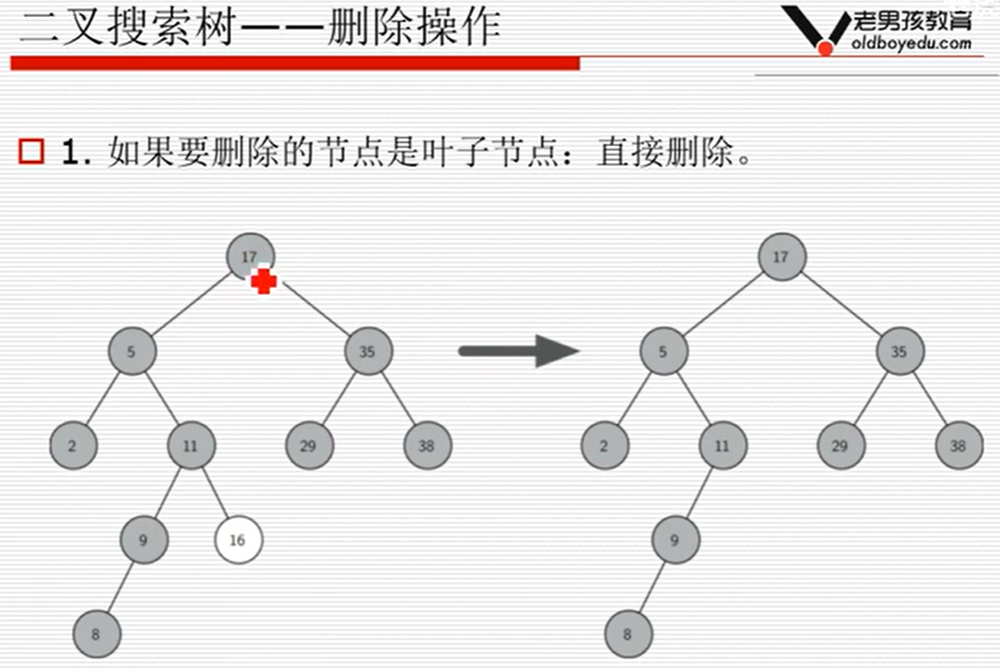
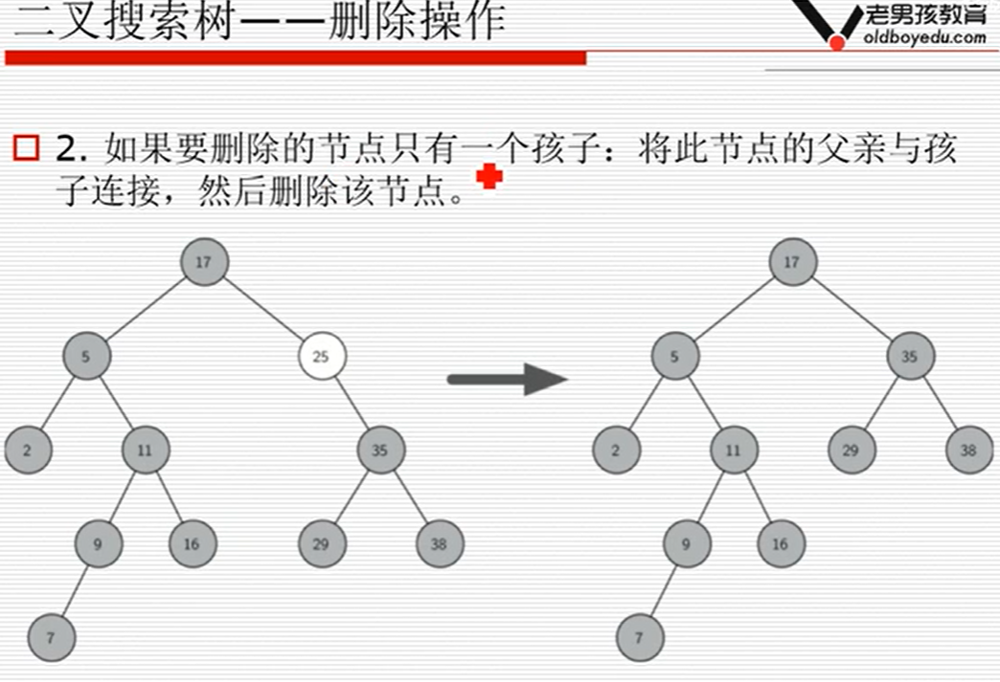

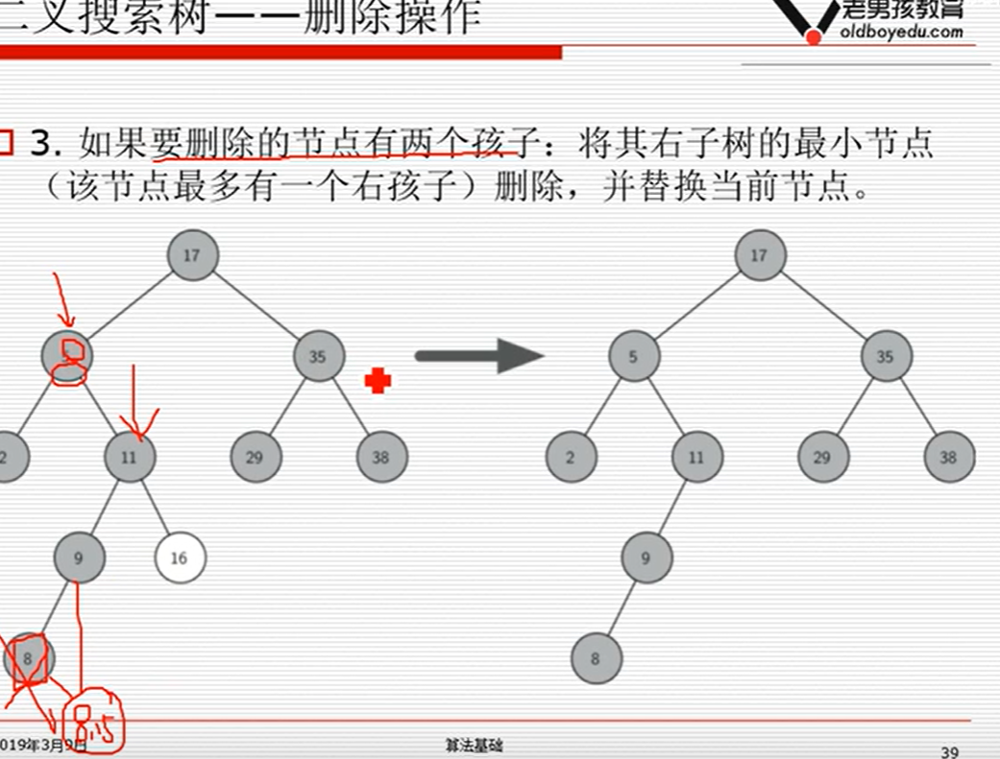
5.4 删除操作的代码
xxxxxxxxxxclass BiTreeNode: def __init__(self, data): self.data = data self.lchild = None self.rchild = None self.parent = None def _remove_node_1(self, node): # 删除的第一种情况 if not node.parent： # 根节点 self.root = None elif node == node.parent.lchild # 是父亲的左孩子 node.parent.lchild = None else: # 是父亲的右孩子 node.parent.rchild = None def _remove_node_21(self, node): if not node.parent: # 根节点 self.root = node.rchild self.root.parent = None elif node == node.parent.lchild: node.parent.lchild = node.rchild node.rchild.parent = node.parent else: node.parent.rchild = node.rchild node.rchild.parent = node.parent def delete(self, val): if self.root: # 不是空树 node = self.query_no_rec_(val) if not node: # 如果不存在该节点 return False if not node.lchild and not node.rchild: # 1.叶子节点 self._remove_node_1(node) elif not node.lchild: #2.1 只有一个右孩子 self._remove_node_21(node) elif not node.rchild: #2.2 只有一个左孩子 self._remove_node_22(node) else： #3. 有两个孩子 # 找到右子树中的最小节点 min_node = node.rchild while min_node.lchild: min_node = min_node.lchild node.data = min_node.data # 删除该节点 if min_node.rchild: self._remove_node_21(min_node) else: self._remove_node_1(min_node) 5.5 查询的效率（最坏情况）

5.5.1 AVL树

插入操作导致不平衡

解决方法
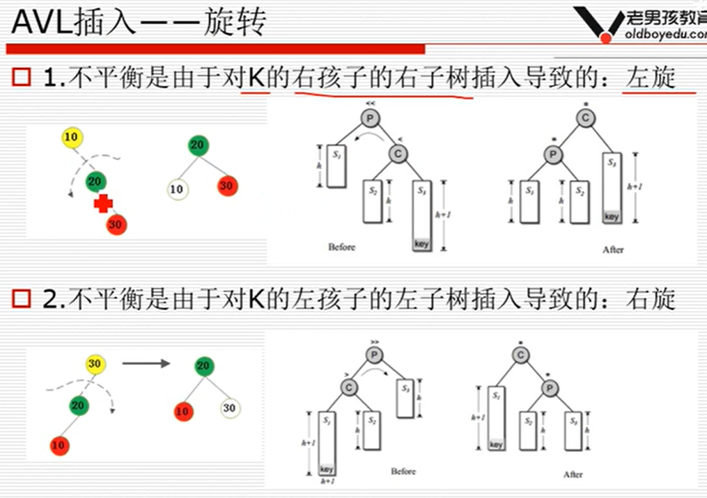
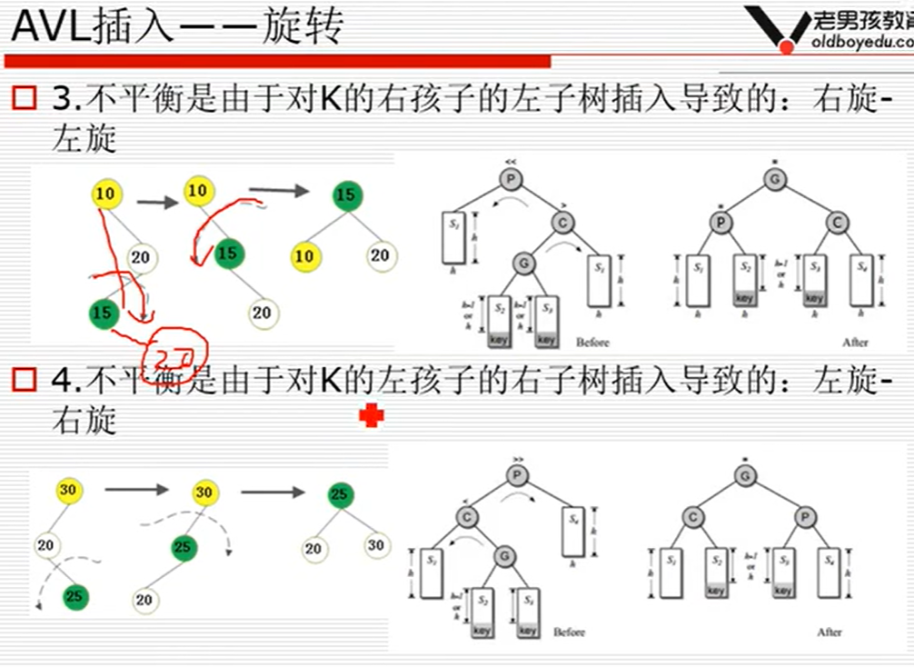
5.6 B树

14 算法习题
Leetcode上的题目讲解
15 设计模式
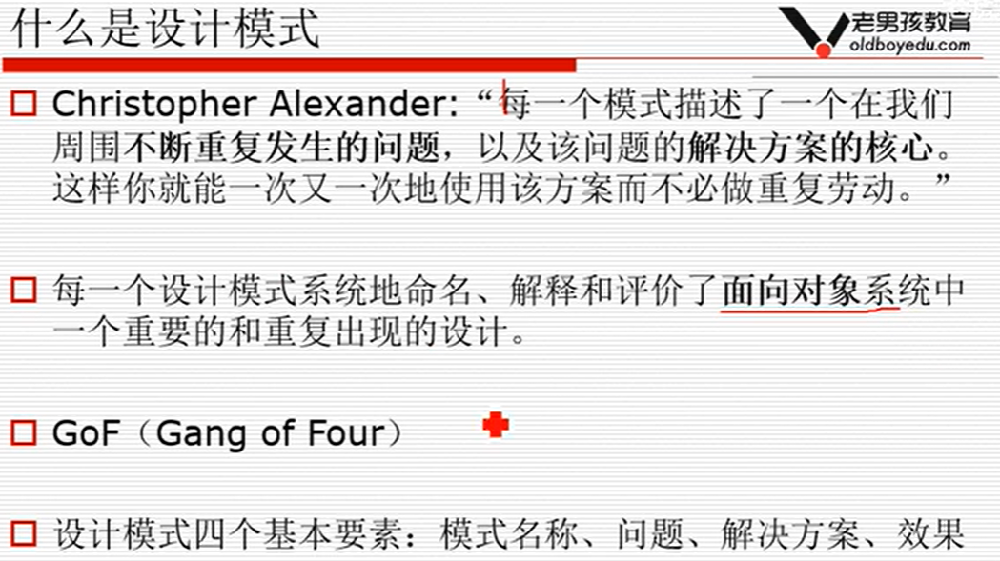

设计模式六大原则

设计模式的分类

创建型模式：
简单工厂模式
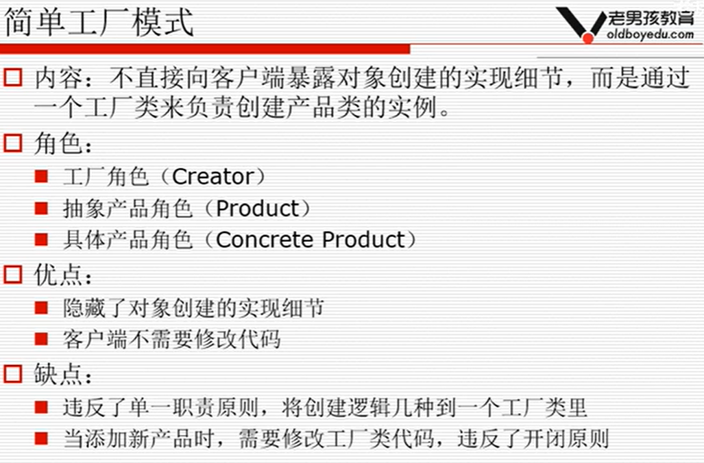
工厂方法模式